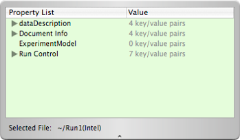
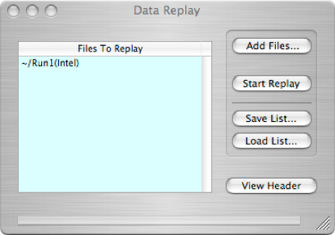

Data Replay



The Data Replay object is used to replay data into another object such as the Data Monitor where one can examine the histograms from a run. It can replay any number of runs back to back and thus add many runs together for display. A single file can be selected to examine its data header.
Add files to be replayed (list will appear in window to the left). Start replay. Save or load a list of files to replay. Highlight a file and hit delete to remove from the list.
View the XML header of the highlighted file in the drawer.
The Data Replay object would typically be connected to a Data Monitor like this: